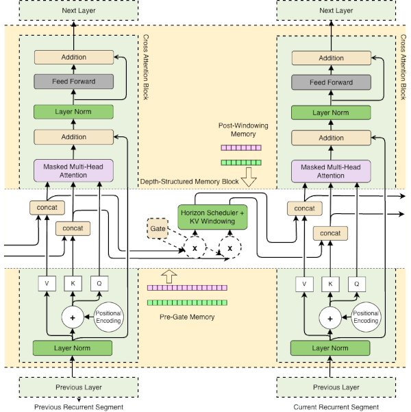
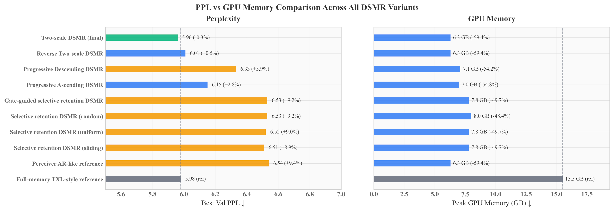

We introduce Depth-Structured Music Recurrence (DSMR), a training-time design that learns from complete compositions end to end by streaming each piece left-to-right with stateful recurrent attention and distributing layer-wise memory horizons under a fixed recurrent-state budget.
Our main instantiation, two-scale DSMR, assigns long history windows to lower layers and a uniform short window to the remaining layers. On MAESTRO, two-scale DSMR matches a full-memory recurrent reference in perplexity (5.96 vs. 5.98) while using approximately 59% less GPU memory and achieving roughly 36% higher throughput.

| Setting | Peak Mem | Tokens/s | Best PPL |
|---|---|---|---|
| Full-memory reference | 15.5 GB | 7,618 | 5.98 |
| Perceiver AR-like | 6.3 GB | 11,753 | 6.54 |
| Selective retention (sliding) | 7.8 GB | 11,061 | 6.51 |
| Progressive Descending | 7.1 GB | 10,556 | 6.33 |
| Progressive Ascending | 7.0 GB | 10,540 | 6.15 |
| Reverse Two-scale | 6.3 GB | 10,324 | 6.01 |
| Two-scale DSMR (final) | 6.3 GB | 10,339 | 5.96 |

Two-scale DSMR achieves 5.96 PPL on MAESTRO, matching the 5.98 PPL of the full-memory recurrent reference model.
By budgeting the recurrent state across layers, it reduces peak memory usage from 15.5 GB to just 6.3 GB.
The streamlined attention mechanism enables faster processing, increasing throughput to 10,339 tokens per second.
Traditional Transformers scale quadratically with sequence length. Modeling full pieces spanning thousands of events is computationally prohibitive for resource-limited devices, often forcing existing solutions to truncate context.
DSMR streams compositions left-to-right via Transformer-XL recurrence. It uses layer-wise memory-horizon scheduling to budget recurrent KV states across depth, achieving global coherence without increasing compute depth.
Two-scale DSMR matches full-attention perplexity but uses over 50% less GPU memory and improves training speed, making long-context symbolic music modeling fully feasible on consumer-grade GPUs.
These capabilities lower the barrier for deploying advanced music AI in creator-centric workflows, enabling interactive composition tools, rehearsal assistance, and real-time improvisation.
To cite this paper, please use the following format:
@misc{yi2026depthstructuredmusicrecurrence,
title={Depth-Structured Music Recurrence: Budgeted Recurrent Attention for Full-Piece Symbolic Music Modeling},
author={Yungang Yi and Weihua Li and Matthew Kuo and Catherine Shi and Quan Bai},
year={2026},
eprint={2602.19816},
archivePrefix={arXiv},
primaryClass={cs.SD},
url={https://arxiv.org/abs/2602.19816},
keywords={Symbolic music generation, Long-context modeling, Recurrent attention, Streaming training, Depth-Structured Music Recurrence},
doi={https://doi.org/10.48550/arXiv.2602.19816}
}